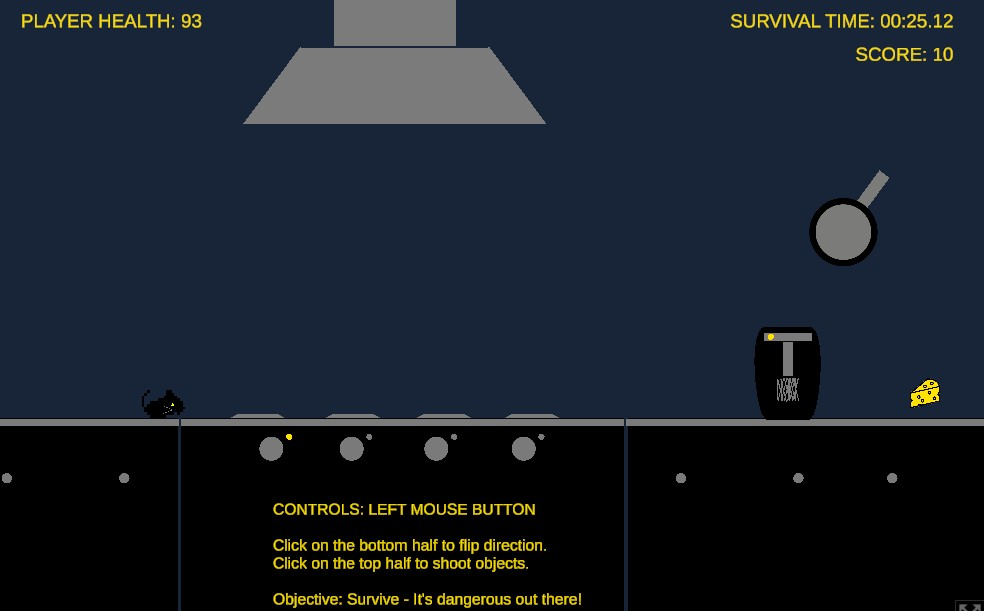
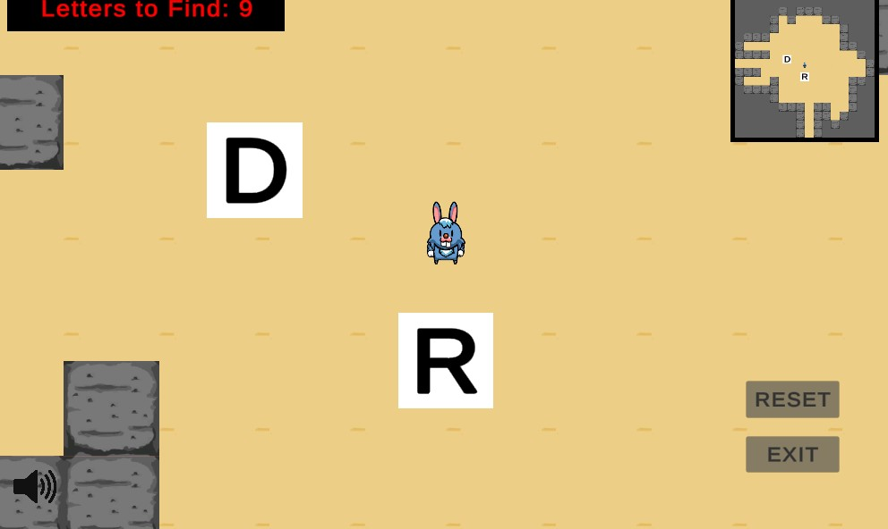
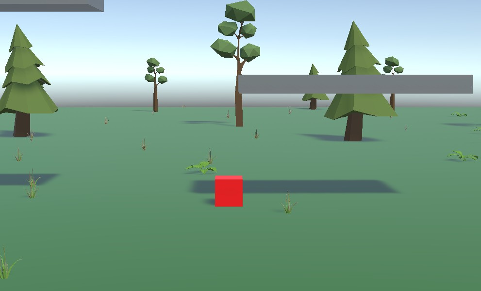

PLAY IN BROWSER ↗PROJECT / 01
No Whisk, No Reward
A survival game created for the UAT Founder's Jam in Fall 2024—built fast, tested often, and shipped to the browser.
Game Programming graduate · Arizona
I’m Daniel—a programmer focused on gameplay, rapid prototyping, and turning curious ideas into playable experiences.
public class Daniel : GameProgrammer
{
public string focus = "Gameplay";
public string engine = "Unity";
public int shippedGames = 5;
void Update()
{
learn();
build();
makeItFun();
}
}01 / SELECTED WORK
Small projects, big lessons. Each game is a snapshot of a mechanic explored, a deadline met, or a new skill unlocked.

PLAY IN BROWSER ↗A survival game created for the UAT Founder's Jam in Fall 2024—built fast, tested often, and shipped to the browser.
 PLAY ↗
PLAY ↗
Outlast waves of zombies in this 2D shooter, created as an early Game Programming course project.

PLAY ↗A simple learn-to-spell game for kids, designed to make early word practice feel playful and approachable.

PLAY ↗A deliberately scrappy platformer made for The Bad Game Jam—an exercise in scope, humor, and finishing.
02 / ABOUT
I earned my degree in Game Programming and I’m building toward a career creating memorable, responsive player experiences.
My projects span survival games, platformers, shooters, and educational play. I care about the craft behind the screen: readable systems, useful iteration, and the tiny details that make controls feel right.
03 / NEXT LEVEL
I’m always interested in new games, collaborations, and opportunities to grow.